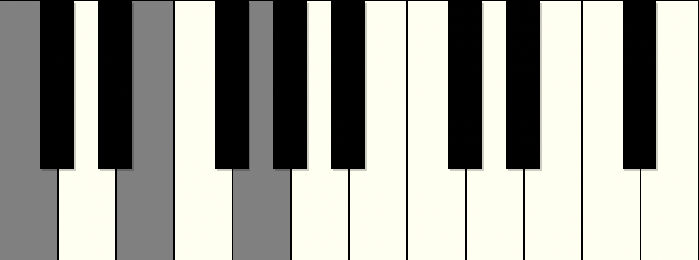
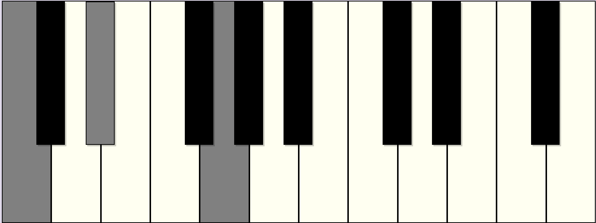
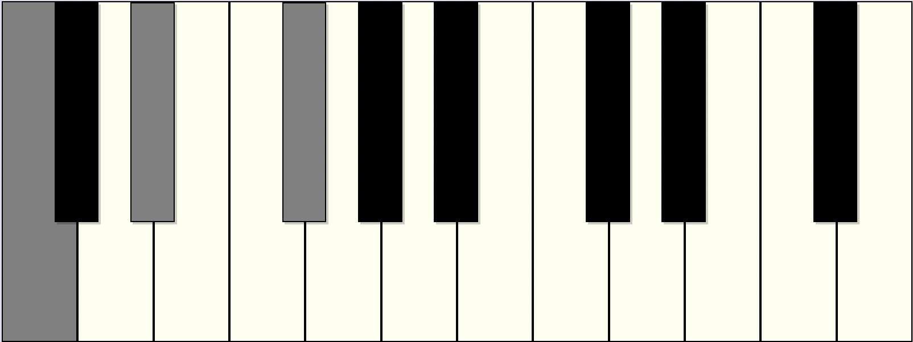
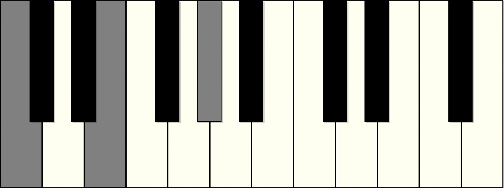

A triad is a group of three notes which which act as the building blocks of most chords.
Triads are defined by the number of half-steps between each note. A half-step is the equivalent of moving to the next piano key - for example, from E to F, or F to F#.
The distance in half-steps between each note is called an "interval". The interval from a note (C) to the next note (D) is a second, the interval from a note (C) to the note after the next note (E) is a third, and so on. A triad is always a stack of thirds, such as C - E - G, or D - F - A.
While this app only presents triads in their fundamental order - root, third, fifth - these notes do not have to be strictly in that order. For example, if the third is moved an octave higher so that it sounds higher than the fifth, the quality of the chord is not changed.
Major Triads are built from a root note, the note a major third (four half-steps) from the root, and the note a perfect fifth from the root (seven half-steps). In this example, C is the root, E is the third, and G is the fifth.
A major triad is characterized by a "bright" and stable sound. With the minor triad, it is the most commonly used harmony in much Western Popular and Classical music.
Minor Triads are built from a root note, the note a minor third (three half-steps) from the root, and the note a perfect fifth from the root (seven half-steps). In this example, C is the root, E♭ is the third, and G is the fifth.
A minor triad is characterized by a "dark" and stable sound. With the major triad, it is the most commonly used harmony in much Western Popular and Classical music.
Diminished Triads are built from a root note, the note a major third (four half-steps) from the root, and the note a perfect fifth from the root (seven half-steps). In this example, C is the root, E is the third, and G is the fifth.
A diminished triad is characterized by a tense and unstable sound. It is often used to generate harmonic tension, and so works well to connect more stable chords, or as a dramatic effect.
Augmented Triads are built from a root note, the note a major third (four half-steps) from the root, and the note an augmented fifth from the root (eight half-steps). In this example, C is the root, E is the third, and G♯ is the fifth.
An augmented triad is characterized by a "floaty" quality and unstable sound. Since it divides the octave into three equal parts, the triad could be re-arranged so that either the third or fifth could be the root note, lending this triad an ambiguous nature.